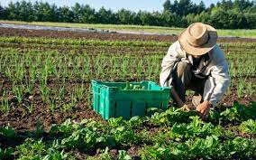
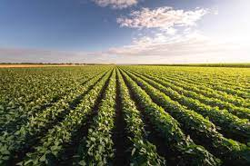

A agricultura é uma prática econômica que envolve o cultivo de espécies vegetais para a obtenção de alimentos e matérias-primas. Essa atividade econômica faz parte do setor primário da economia, que compreende as atividades pecuárias e extrativistas, além da própria agricultura.
Agricultura tradicional, Agricultura moderna, Agricultura familiar, Agricultura patronal, Agricultura orgânica.
 